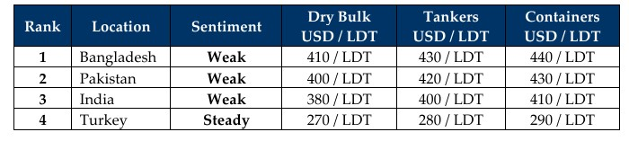

inWeekly Demolition Reports15/12/2025

Markets across the board seem to be getting hit by the tragedies of 2025 as December firmly stamps its footprints acrossthe 2025 ship-recycling timeline, ensuring the situation doesn’t get a chance to improve just yet! Inflation is on the rise again, plate prices are collapsing in the wrong places, all while the U.S. Dollar continues to rummage through the wreckage of 2025 for whatever it can suck out of ship-recycling currencies and both freight rates & oil futures tumble in unison — just within the span of week 50.
To start, the Baltic Exchange Dry Index reportedly fell nearly 4%, down to its lowest level in nearly a month, dragged by capes that fell 5.6%. Panamax followed suit with a 2.1% drop, and smaller vessels wrapped up the cold blanket with a 16-basis-point drop as the cherry on top. And, surprising many industry traders, oil futures failed to hit the much-anticipated USD 60/barrel mark, instead retreating over 3% to USD 57.61/barrel as the week clocked out — amidst global fears primarily brought on by forecasts predicting an overproduction of oil. The International Energy Agency reaffirming its forecast for a “record supply glut.”
Local steel plate prices seemed to slip on the spilling oil figures as they, too, followed suit with noteworthy drops of their own, compounded by slipping currencies as the U.S. Dollar continues to rattle major trading economies.
As the occasional introduction of a market vessel remains the carrot dangling at the end of a drying supply stick, Indian sub-continent ship-recycling markets were already declining, ensuring that the upcoming festive time may perhaps be the perfect moment to reflect and reset after an altogether inadequate and underwhelming few years of horrid supply and ever-declining levels. USD 600/ton was breached back in January 2024, and for a great majority—standing at the doorstep of 2026, and across all sub-continent locations—prices have dipped below the USD 400/ton mark.
While several green vessels have been sold cheaply into Bangladesh over recent weeks, prices here seem to have slipped off the back of a spate of recent deliveries pulling local levels down. Domestic turbulence is unfortunately on the rise in the small nation once again as the final election dates get announced. And although a healthy majority of the recent supply was squarely focused on a Bangladesh redelivery that has now slipped into the background—joining Indian and Pakistani recycling markets on their downward decline once again—evidence was across all the waterfronts this week, including a surprise.
Finally, HKC developments are ongoing in both Bangladesh and Pakistan, with another three yards expected to receive their HKC accreditations in Chattogram in the new year, while the next batch of yards in Pakistan are expected to follow within Q1 2026 — what a year in recycling it’s truly been.
For Week 50 of 2025, GMS Market Rankings / vessel indications are as below.

📄 Download PDF: Ship-recycling-market-insight-Week-50-12-12-2025-December_Downers.pdfSource: GMS,Inc.https://www.gmsinc.net/gms_new/index.php/web